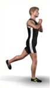

Tipps und Ratschläge:
Tipps zu Deinen Übungsausführungen:
Hier geben wir Dir wichtige Tipps zur Ausführung Deiner ersten Übungen. Solltest Du bereits schon regelmäßig Übungen absolvieren, kann es Dich wieder an eine gute, richtige Haltung erinnern.
Trinken:

Pro eine Stunde Sport trinke ca. 1 Liter Wasser, zu empfehlen: ohne Kohlensäure
Atmung:

Hier gibt es eine einfache Regel: atme aus, wenn Du Kraft benötigst und atme ein, wenn du in die Ausgangsposition zurückkommst. Das Wichtigste ist aber, dass Du überhaupt atmest.
Bei Dehnungsübungen ist es wichtig, während der Ausatmung in die Dehnungsposition zu kommen. Durch die Ausatmung gelingt Dir dies ein kleines Stück weiter, tiefer usw. als während der Einatmung, probiere es aus.
Übungen im Stand:

Hier ist zu beachten, dass Deine Knie immer leicht gebeugt sind, weich und Du somit Deine Kniegelenke schonst.
Halte den Oberkörper gerade, ziehe Deine Wirbelsäule auseinander und schiebe Deine Brust nach vorne. Langfristig wirst Du dadurch bemerken, dass sich Deine gesamte Körperhaltung verbessern wird. Ziehe Deine Schultern tief!
hüftbreiter Stand: Deine Füße stehen unter der Hüfte, leicht geöffnet und Deine Knie sind immer leicht gebeugt, weich und somit werden Deine Kniegelenke geschont.
Beugen der Knie-Beine oder absenken des
Po´s:
Achte stets darauf, dass Deine Knie hinter den Fußspitzen bleiben, damit der Druck auf die Menisken minimiert wird und Du bei einer langfristigen Übungsausführungen Verletzungen vermeiden kannst.
Übungen am Boden:
Rückenlage:

Spanne Deine Bauchmuskeln an, so dass Dein unterer Rücken sich immer auf der Matte befindet. Dies verhindert Rückenschmerzen und schont den unteren Rückenbereich.
Vierfüßlerstand:
Diese Grundposition ist für viele Übungen wichtig:
Setze Deine Knie unter die Hüfte und die Ellbogen oder Hände unter die Schulter. Halte Deinen Rücken gerade und ziehe den Bauchnabel ein, halte diese Grundspannung, auch während der Übung.
Bei Übungen auf dem Boden ist stets eine Gymnastikmatte zu empfehlen, dies verhindert unangenehme Druckstellen während der Übung.